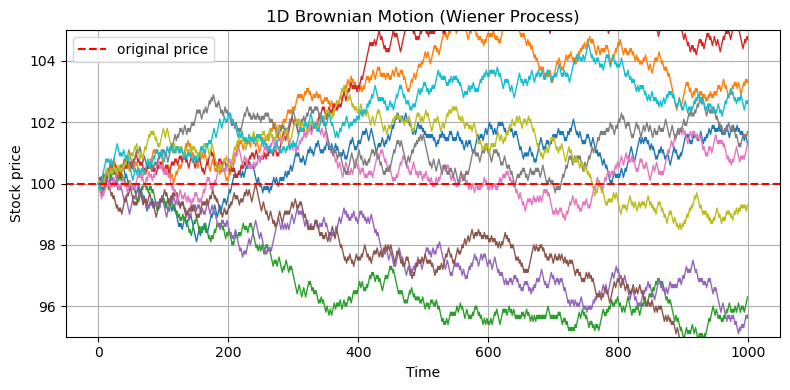
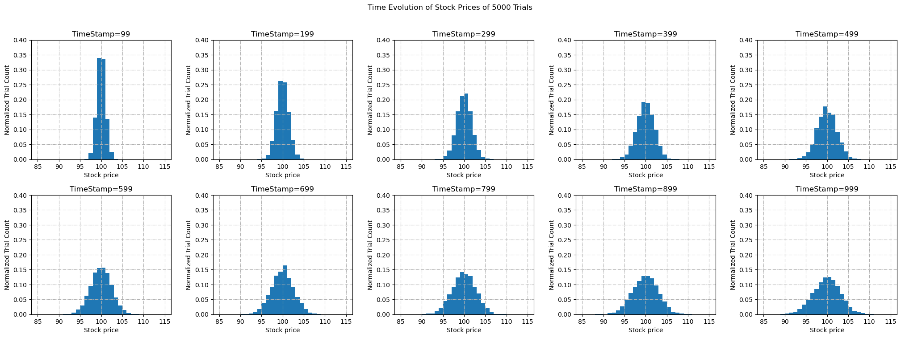

How to Predict Stock Prices Using Random Walks
How to Predict Stock Prices Using Random Walks
The price of a stock depends on very many factors in reality that we perceive it to be effectively random. This fact makes a random walk a pretty good approximation to the price fluctuation of a stock over time. In this article, we will take a first shot of predicting the seemingly random stock price. Let’s assume that at every second, the stock price has a 50% chance that it increases by $0.1, and a 50% chance that it decreases by $0.1. Whenever we try to make meaningful predictions from random events, we should appeal to statistics. That is, we must repeat the time evolution of the stock price multiple times and see if we can extract some meaningful information from it.
Repeated time evolution of stock prices
Let’s quantify some values. We will observe the time evolution of a stock over 1000 seconds (~17 minutes). At \(t=0\), let’s assume that the stock price is $100. Finally, let’s repreat the experiment 5000 times.
Let’s also define a variable named RESULTS that stores the stock prices at every time step for all the trials. It will be a 2D array where the outer axis represents the trial index and the inner axis represents the stock price at each time for a trial. The time increments will be stored in the variable ts.
Now we need a function that does the random walk for us. We can define a function where, given the number of steps and the initial price, it randomly adds or subtracts 0.01 from the current price.
Using the ingredients above, we can now repeat the random walks.
It’s as simple as this! Let’s take a look at one of those trials and get a sense of what the result looks like. I will choose, say, 318th trial and see how the prices changed for that trial. Since the prices are reported over 1000 seconds and 1000 entries is a bit too long, I will print the price every 100 seconds.
[100.0, 100.4, 99.8, 100.8, 103.2, 101.8, 103.2, 102.4, 102.6, 102.8]The price starts at $100 as expected, and it seems to randomly walk back and forth as time evolves. To grasp a better picture, let’s try plotting some of the trials over time.

Analyzing collective behavior
The purpose of the above plot was to simply visualize that we had successfully simulated the stock prices as random walks. The real fun starts now. For each time step, let’s count how many trials lie between, say, $99 and $100, how many lie between $100 and $101, and so on. Based on the plot above, I think it’s appropriate to count the trials within the range \(100\pm 15\) dollars. For visual purposes, I will only show the price distribution every 100 steps.

This is fascinating! The distribution tells us that the prices tend to spread out, or diffuse, as time evolves, with a mean centered around the initial price of $100. In physics, we model such diffusive evolution with a differential equation called the Heat Equation, where the name is motivated by how it predicts the diffusion of heat of an object over time.
The Heat Equation
The heat equation is given by \[ \frac{du}{dt} = \alpha\frac{d^2u}{dx^2}. \]
Although the heat equation is a second-order, parabolic partial differential equation, it is one of the few equations that has an analytic solution: \[ u(x,t) = \frac{1}{\sqrt{4\pi\alpha t}}\exp\left[-\frac{(x-x_i)^2}{4\alpha t}\right], \] which is precisely a time evolving Gaussian!
Derivation: solution to heat equation
We first move to spatial Fourier space so that we can deal with a simple first-order linear ODE in time. Letting \(\hat{u}(k,t) = \frac{1}{\sqrt{2\pi}}\int_{-\infty}^{\infty}u(x,t)e^{-ikx}\,dx\), we have \[ \frac{d}{dt}\hat{u}(k,t) = -\alpha k^2\hat{u}(k,t). \] We immediately see a general solution for this equation: \[ \hat{u}(k,t) = e^{-\alpha k^2 t}\hat{u}(k,0). \]
Notice how the solution in Fourier space is a product of two functions: i) \(\hat{f}(k,0) \equiv \hat{u}(k,t)\) which is the initial condition in Fourier space, and ii) \(\hat{g} \equiv e^{-\alpha k^2 t}\), which is sometimes called the heat kernel. We can exploit the convolution theorem to represent this solution in physical space, which states that a product of two functions \(\hat{f}\) and \(\hat{g}\) in Fourier space is a convolution of the inverse Fourier transformed version of the functions \(f\) and \(g\) in the physical space. That is, \(u(x,t) = f*g\). Simply, \(\hat{f}(k,0) = f(x,0) = \delta(x-100)\), the initial condition. It is a Dirac delta function centered at $100. Now let’s take the inverse Fourier transform of \(\hat{g}\).
\[\begin{align*} g(x,t) &= \frac{1}{\sqrt{2\pi}}\int_{-\infty}^{\infty}e^{ikx}e^{-\alpha k^2 t}\,dk \\ &= \frac{1}{\sqrt{2\pi}}\int_{-\infty}^{\infty}\exp\left[-\alpha t\left(k-\frac{ix}{2\alpha t}\right)^2-\frac{x^2}{4\alpha t}\right]\,dk \\ &= \frac{e^{-x^2/4\alpha t}}{\sqrt{2\pi}}\int_{-\infty}^{\infty}\exp\left[-\alpha t\left(k-\frac{ix}{2\alpha t}\right)^2\right]\,dk \\ &= \frac{e^{-x^2/4\alpha t}}{\sqrt{2\pi}}\sqrt{\frac{\pi}{\alpha t}} = \frac{1}{\sqrt{4\pi\alpha t}}e^{-x^2/4\alpha t}, \end{align*}\]
where I completed the square from the first to second line \[\begin{align*} -\alpha k^2 t + ikx &= -\alpha t\left(k^2-\frac{ikx}{\alpha t}\right) \\ &= -\alpha t(k^2-2bk+b^2)+\alpha t b^2 \text{ , where } b\equiv\frac{ix}{2\alpha t} \\ &= -\alpha t\left(k-\frac{ix}{2\alpha t}\right)^2-\frac{x^2}{4\alpha t}, \end{align*}\]
and I took the Gaussian integral from the third line to fourth \[\begin{align*} \int_{-\infty}^{\infty}\exp\left[-\alpha t\left(k-\frac{ix}{2\alpha t}\right)^2\right]\,dk &= \int_{-\infty}^{\infty} e^{-a(x+b)^2}\,dx \\ &= \sqrt{\frac{\pi}{a}} \text{ , where } a\equiv \alpha t \text{ and } b\equiv -\frac{ix}{2\alpha t}. \end{align*}\]
Now we take the convolution of \(f\) and \(g\): \[\begin{align*} u(x,t) &= f * g = \frac{1}{\sqrt{4\pi\alpha t}}\int_{-\infty}^{\infty}\delta(x'-x+100)\exp\left[-\frac{x'^2}{4\alpha t}\right]\,dx' \\ &= \frac{1}{\sqrt{4\pi\alpha t}}\exp\left[-\frac{(x-100)^2}{4\alpha t}\right] \end{align*}\]
TODO: - alpha is set to 0.0055 and it fits. Analytically derive the volatility and find the optimal alpha value.